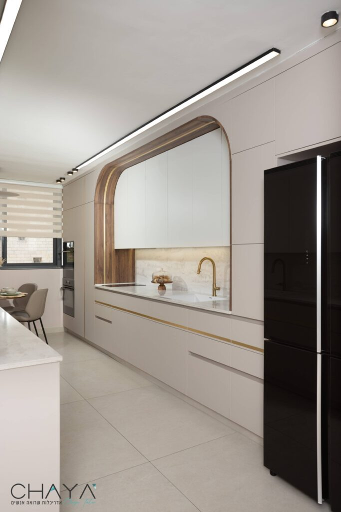

CHAYA
TALER



נעים להכיר, אני חיה טאלר.
כבר מעל עשור שאני מובילה פרויקטים של אדריכלות ועיצוב פנים ללקוחות שלא מוכנים להתפשר על פחות מהטוב ביותר. כציירת ויוצרת, כל פרויקט עבורי הוא חדש ובלעדי, לעולם לא תמצאו בפרויקטים שלי 2 בתים דומים. עוד לפני שאנחנו מדברים על צבעים או חומרים, חשוב לי להכיר אתכם: איך נראה היום שלכם, מה גורם לכם להרגיש בבית, ואיזו תחושה הייתם רוצים לחוות בכל פעם שאתם פותחים את הדלת.
מכירים את הבית הזה?
שכשנכנסים אליו, מרגישים מיד משהו אחר?
האור נופל בדיוק בזווית המושלמת וכל עלה בעציץ מונח מושלם כאילו מתוך יצירה. האווירה משדרת חדשנות לצד אמירה אישית משלכם. בית כזה הוא לא תוצאה של טרנד חולף אלא של חיבור נדיר בין אמנות, עכשוויות ועוצמה של הקשבה לאנשים שחיים בו.
THE
VISION
החזון שלי:
מעבר לבית מתוכנן טוב עד לפרטים הקטנים ומעוצב בסטנדרט בינלאומי. חשוב לי ברמה האישית שתעברו את תקופת הבניה כחוויה רגועה ומשמחת.
תהליך בנייה או שיפוץ לא חייבים להיות תקופה של מתח ובלבול. המטרה שלי היא להעניק לכם שקט נפשי, ביטחון וסדר.
התוצאה? בית אחר, מואר ופותח דלת לרגעים מלאי נחת ונשימה של אמנות. בית שמתאים בדיוק למי שאתם, לאורחים שלכם ולמה שאתם מתרגשים ממנו כל יום מחדש.
THE
METHOD
-
שלב 1: תכנון עומק
חלוקת השטח בצורה מנצלת ואיכותית, תוך שמירה על אסתטיקה ומרחב. בתהליך התכנון נבנה רשימת צרכים, חלומות ונתונים שתואמים בדיוק לחיים שלכם, עם חשיבה קדימה וראש גדול לטווח רחב.
-
שלב 2: עיצוב אומנותי
נזהה את השפה העיצובית והמשיכה הטבעית לסגנון שלכם, ונלביש את החלל באלמנטים שיעשו לכם טוב לחזור הביתה: לוחות השראה, בחירת חומרים מותאמים מקרמיקה, תאורה ועד לדקורציה שעל מדף הכניסה.
-
שלב 3: ליווי מקיף
סט תכניות מקיף לביצוע הקבלן: חשמל, בנייה, הריסה, אינסטלציה חכמה וגבס. חוזה שיחסוך לכם כסף מול הקבלן, בחירת אנשי המקצוע המתאימים לתקציב, וימי רכישות לבחירת חיפויים, כלים סניטריים, תאורה וריהוט.